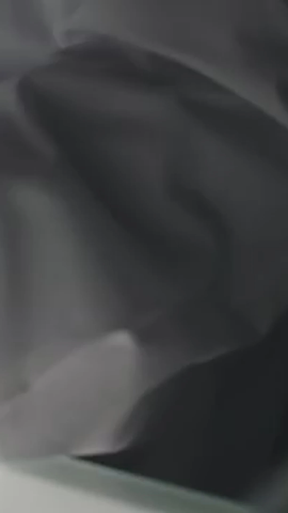
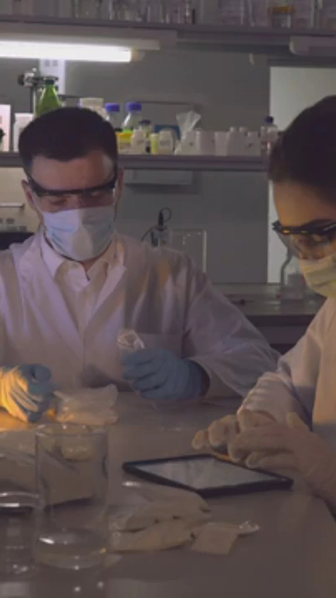
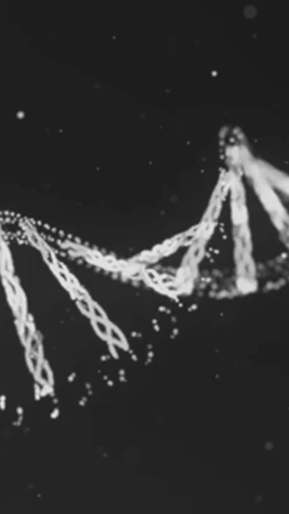
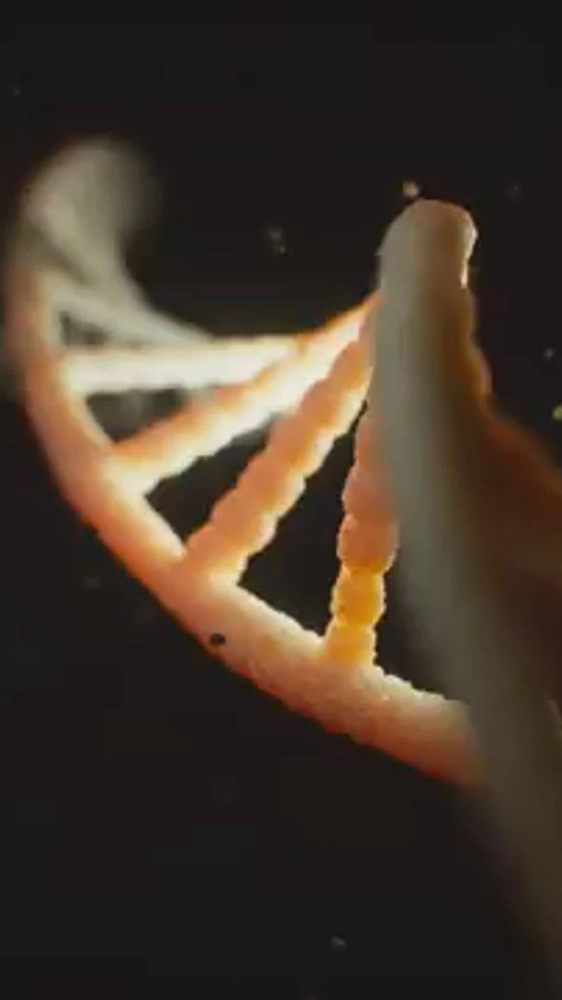
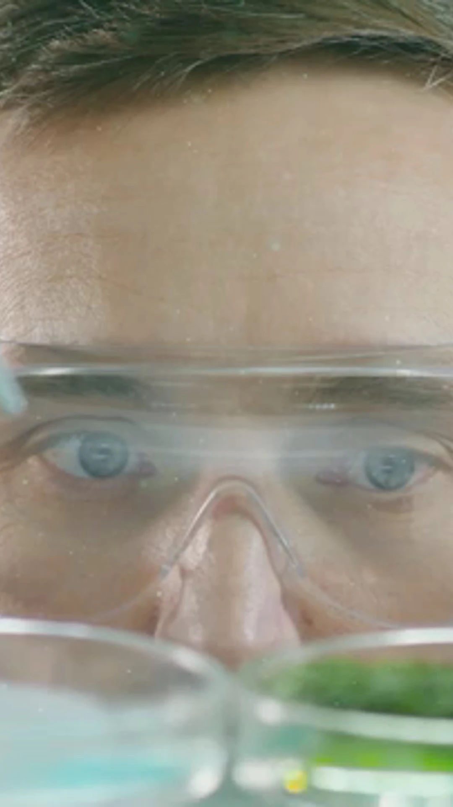

Análisis de cromosomas para detectar anomalías numéricas y estructurales. Incluye cariotipo y bandeo cromosómico.

Diagnóstico prenatal
Conjunto de técnicas para evaluar la salud del feto durante el embarazo. Incluye análisis de líquido amniótico y muestras de vellosidades coriónicas.

Hibridación In Situ (FISH)
Técnica que permite detectar secuencias específicas de ADN en cromosomas usando sondas fluorescentes. Útil para diagnóstico de alteraciones genéticas.

Biología Molecular
Análisis de ADN/ARN para detectar mutaciones genéticas, variantes y marcadores moleculares asociados a enfermedades.

Citometría de flujo
Análisis celular que permite identificar y cuantificar diferentes poblaciones celulares. Útil en diagnóstico de leucemias y linfomas.

Análisis bioquímicos
Estudios de laboratorio que evalúan diferentes componentes químicos en sangre, orina y otros fluidos corporales. Incluye perfil lipídico, glucemia, función renal y hepática.